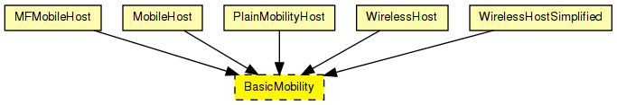
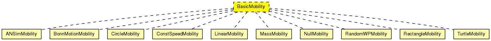

This is not an actual mobility model, but a prototype for other mobility models.
Author: Andras Varga
The following diagram shows usage relationships between types. Unresolved types are missing from the diagram.
The following diagram shows inheritance relationships for this type. Unresolved types are missing from the diagram.
| Name | Type | Description |
|---|---|---|
| MFMobileHost | compound module |
Models a mobile host with a wireless (802.11b) card in ad-hoc mode. This model contains the Mobility Framework's 802.11 implementation, Nic80211, and IP, TCP and UDP protocols. The mobility model can be dynamically specified with the mobilityType parameter. |
| MobileHost | compound module |
Models a mobile host with a wireless (802.11b) card in ad-hoc mode. This model contains the new IEEE 802.11 implementation, Ieee80211Nic, and IP, TCP and UDP protocols. The mobility model can be dynamically specified with the mobilityType parameter. |
| PlainMobilityHost | compound module |
A host for demonstrating mobility models only -- it contains no protocol layers at all. |
| WirelessHost | compound module |
Models a host with one wireless (802.11b) card in infrastructure mode. This module is basically a StandardHost with an Ieee80211NicSTA added. It should be used in conjunction with WirelessAP, or any other AP model which contains Ieee80211NicAP. |
| WirelessHostSimplified | compound module |
Models a host with one wireless (802.11b) card in infrastructure mode, but using a simplified NIC that does not support handovers. This module is basically a StandardHost with an Ieee80211NicSTASimplified added. It should be used in conjunction with WirelessAPSimplified, or any other AP model which contains Ieee80211NicAPSimplified. |
| Name | Value | Description |
|---|---|---|
| display | i=block/cogwheel |
// // This is not an actual mobility model, but a prototype for other mobility models. // // @author Andras Varga // moduleinterface BasicMobility { @display("i=block/cogwheel"); }